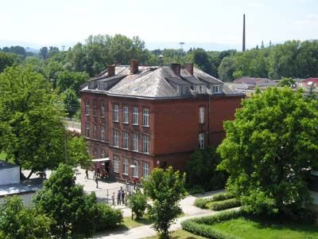

Początki funkcjonowania Specjalnego Ośrodka Szkolno-Wychowawczego w Nysie, który w roku 2012 obchodzi 50-lecie istnienia, sięgają 1962 roku. Wtedy to Szkoła Podstawowa Nr 2 została przeniesiona z obiektu przy ulicy Kordeckiego do nowych budynków, a Kuratorium Opolskiego Okręgu Szkolnego w Opolu wydało orzeczenie w sprawie organizacji zakładu wychowawczego.
Budynek przy ul. Kordeckiego 2, w którym mieścił się SOSW
Z dniem 1 lipca 1962 roku rozpoczął swoją działalność Państwowy Zakład Wychowawczy Nr 2 w Nysie, w którym przebywać miała młodzież niepełnosprawna intelektualnie z powiatu nyskiego. Jednocześnie powołano do życia Szkołę Podstawową Specjalną przy Państwowym Zakładzie Wychowawczym Nr 2 w Nysie.
Zakład mieścił się w jednym budynku pochodzącym z początku wieku. Na parterze usytuowane były kuchnia, jadalnia, pracownia techniki, pomieszczenia administracji i gabinet dyrektora. Na pierwszym piętrze mieściło się sześć pomieszczeń klasowych. Drugie i trzecie piętro budynku zajmował internat.
Pierwszym dyrektorem placówki był Joachim Lepich. Następnie przez wiele lat funkcję tę pełnił Henryk Tyczka. Po jego odejściu na emeryturę w 1991 r. stanowisko objął Tadeusz Wilk. Od 01 września 2000 r. Ośrodkiem kieruje Jacek Tyczka. Ponieważ liczba uczniów stale wzrasta, konieczne było utworzenie stanowiska zastępcy dyrektora. Jako pierwszy funkcję tę pełnił Władysław Michór. Obecnie zastępcą dyrektora Ośrodka i dyrektorem szkoły jest Czesław Bąk. Natomiast stanowisko kierownika internatu jako pierwszy pełnił Bogusław Haiński, potem Bernadetta Kowalska, Zofia Papis, a od 01 września 2003 r. Marzena Wajda. Uczniowie przebywający w internacie zawsze otaczani byli szczególną troską.
Najdłuższą kadencją dyrektorską w naszym Ośrodku była kadencja Henryka Tyczki - pełnił funkcję dyrektora Ośrodka przez 28 lat - od 1963 do 1991 roku.
Byli dyrektorzy SOSW - Henryk Tyczka i Tadeusz Wilk
W roku 1996 powstał w nowo wybudowanych pomieszczeniach I oddział dla dzieci głębiej upośledzonych. Dzisiaj jest już tych oddziałów 19.
Kadencja obecnego dyrektora - Jacka Tyczki rozpoczęła się 01 września 2000 r. Nastał czas ważnych dla funkcjonowania Ośrodka zmian.
Przez długi czas placówka nie miała patrona. W styczniu 2002 r. uczniowie wybrali - został nim ksiądz Jan Twardowski, poeta, człowiek wielkiego serca. Po 40 latach funkcjonowania Ośrodek otrzymał imię ks. Jana Twardowskiego.
Posiadanie takiego patrona zobowiązuje. Każdego roku organizujemy Imprezę Integracyjną "Świat według księdza Jana". Tematy czerpiemy z jego twórczości.
Szybko zwiększająca się liczba uczniów i trudne warunki lokalowe zmuszały nas do poszukiwania nowych rozwiązań. Budynki szkolne przestały wystarczać. Przez kilka lat korzystaliśmy z pomieszczeń udostępnionych przez oo. Franciszkanów.
Aż wreszcie 27 października 2006 r. nadszedł długo oczekiwany moment - oddanie nowego budynku, budynku, w którym teraz się znajdujemy, a który w pełni zaspokaja nasze potrzeby. Dobrze wyposażone gabinety przedmiotowe i gabinety specjalistyczne pozwalają na prawidłowe organizowanie zajęć i procesu rewalidacyjnego. Nasz Ośrodek jako jeden z pierwszych w Polsce oferuje uczniom terapię metodą EEG Biofeedback oraz dogoterapię.
Dobrze prowadzone zajęcia pozalekcyjne pozwalają uczniom osiągać sukcesy w zawodach sportowych, konkursach i olimpiadach przedmiotowych w województwie i w kraju. Nasi sportowcy grali we Włoszech, mają szansę pojechać do Szanghaju.
Jesteśmy obecni na wszystkich imprezach integracyjnych organizowanych w mieście i regionie. Staramy się jak najlepiej przygotować uczniów do dalszej nauki i funkcjonowania w środowisku. W 2004 r. została utworzona szkoła przysposabiająca do pracy dla uczniów z upośledzeniem umiarkowanym i znacznym. W szkole organizowane są liczne konkursy i olimpiady, na które zapraszamy przedstawicieli z całego województwa. Działa również wiele kół zainteresowań, w ramach których uczniowie rozwijają swoje zainteresowania.
Sukcesy, jakie osiągamy zawdzięczamy wielu ludziom, w szczególności merytorycznemu wsparciu ze strony Kuratorium, pomocy organizacyjnej i finansowej ze strony Starostwa Powiatu Nyskiego, licznym sponsorom, sprzymierzeńcom i przyjaciołom.
Nad funkcjonowaniem naszej placówki i prawidłowym przebiegiem procesu rewalidacyjnego czuwało wielu wizytatorów. Przez pierwsze lata, które były szczególnie trudne (brak podręczników, programów nauczania i podstawowych środków dydaktycznych) wspomagał nas wizytator Władysław Wąsiel. Później przez wiele lat funkcję tę pełnili: Marianna Wąsiel, Bolesław Reclik, Łucja Stępień, Barbara Łagoda, Stefania Chatys, Irena Szot, Grażyna Hilicka, Jan Kubów, ponownie Stefania Chatys, a w chwili obecnej Jadwiga Szramiak. W ciągu 45 lat było nas wielu.
Dziś w Ośrodku pracuje 89 pracowników: 67 to pracownicy pedagogiczni, a 22 niepedagogiczni.
Nasza nowa szkoła